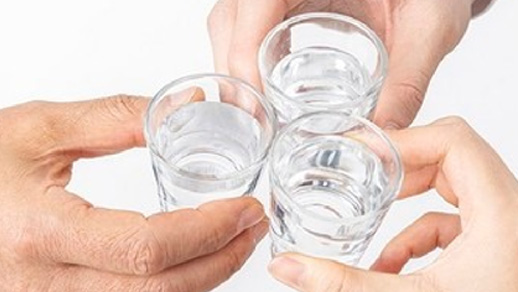
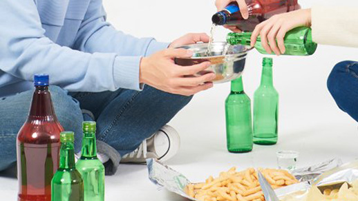
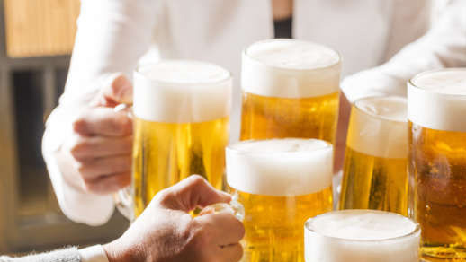

술(酒, 영어: Alcoholic Drink)은 에탄올 성분을 1% 이상 함유하여 마시면 취하게 되는 음료이다. 술에 들어가는 원료는 에틸알코올이다.

술의 역사
History of Alcohol
기원전 9,000년 경 메소포타미아에서는 이미 맥주를 만들어 마셨다. 또한 와인은 고대 그리스 시대에 지중해 연안 곳곳에서 생산되었다. 그리고 한국에서는 삼국시대 이전부터 술을 만들어 먹었다. 소주는 고려 시대 원나라를 통해 들어왔다

술의 효능
Effect of Alcohol
술은 성질이 따뜻해서 몸의 체온을 올리고 혈액순환을 왕성하게 하며 통증을 줄여준다. 그래서 타박상에 사용하는 한약에는 술과 물을 반반씩 넣고 달이는 처방도 있다. 또한 적당한 음주는 생활에 활력을 주고 정신적 긴장을 풀어주며 걱정거리를 잊어버리게 하는 효능도 있다.우리나라의 경우 남성에서는 일주일을 기준으로 13 표준잔 이상, 여성에서는 6 표준잔 이상 음주하면 이미 ‘위험 음주 수준에 이른 상태’라 한다. 쉽게 소주를 기준으로 얘기하면 ‘남성 일주일에 소주 2병’, ‘여성 소주 1병’ 이상의 음주는 위험상태로 최대치를 의미한다.

술의 부작용
Side Effects of Alcohol
과도한 음주 혹은 술을 분해하는 효소가 부족한 사람은 간이 술을 분해하지 못해 독성물질이 생성된다. 독성물질은 간 세포를 손상시키고 염증을 유발하며 몸 전체에 악영향을 미친다. 과음은 장기적으로 간 기능 저하, 지방간, 황달, 간염, 간경화, 간암 등의 질병을 유발한다.